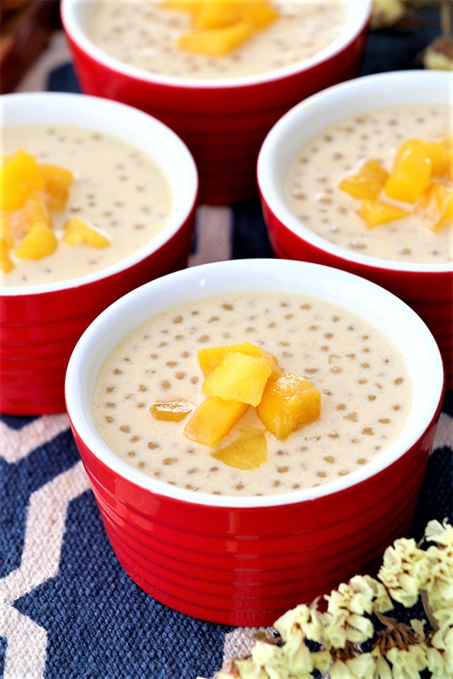

Mango Sago

Description
Mango sago is a dessert found in a lot of Asian countries, tasty, refreshing and super easy to make!
All you need are a couple of ingredients and you're ready to enjoy
Ingredients
- Mango
- Sago
- Coconut milk
- Pomelo
- Sugar
Steps
- Add coconut milk to pan, with a bit of sugar and salt. Cook this until the sugar dissolves
- Take out of pan and cool down
- Grab your mangoes, cut some into pieces and blend the others in a blender. Add the blended mango to your cocount milk
- Put sliced mango pieces into your mango milk mixture. Add pomelo on top